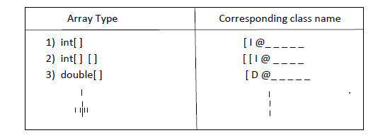
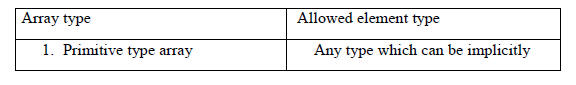
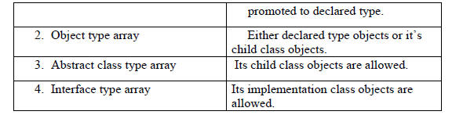
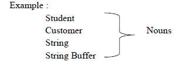
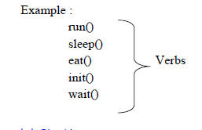
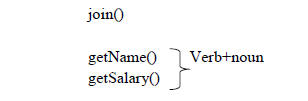
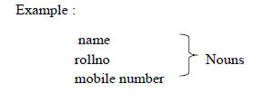

Language Fundamentals
Identifiers
Reserved Words
Data Types
Literals
Arrays
Types of Variables
Var-arg methods
Main() method
Java coding standards
Identifiers
Defination:
A name in java program is called "Identifier", it can be class name or variable name or method name or label name.
In above example Identifiers are Test,main,String,args,x.
Rules to define Identifiers:
1) The only allowed characters in java identifier are:
a to z
A to z
0 to 9
-
$
2) If you are using any other character we will get compile time error.
Example:
All_member // Valid
all# //Invalid
-$-$ //valid
123total //Invalid
Identifier can't start with digits.
3) Java identifiers are case sensitive.
Example:
Class Test
{
int Number=10;
int NUMBER=20;
int NumBer=30;
}
In above example all identifiers are case sensitive.
4) There is no length limit for java indentifiers.But its not recommended to take more than 15 length.
5) Reserved words can't be used as Identifiers.
6) All predefined java class names and interface names we can use as Identifiers.Eventhough it is legal but it is not recommended.
Example 1:
Class Test
{
int String=10;
System.out.println(String);
}
Output: 10
Example 2:
Class Test
{
int Runnable=20;
System.out.println(Runnable);
}
Output: 20
Qu. Which of the following are valid java Identifiers?
1) Java2Share //Valid
2) 4Shared //Invalid
3) all@hands //Invalid
4) total_noof_students //valid
5) -$- //valid
6) Total# //Invalid
7) int //Invalid
8) Integer //Valid
a) byte:
Size: 1 byte (8 bits)
Max-value:127
Min-value: -128
Range= -128 to +127
b) short:
Size: 2 byte (16 bits)
Max-value:32767
Min-value: -32768
Range= -32768 to 32767 (-215 to 215-1 )
c) int:
Size: 4 byte (32 bits)
Max-value: 2147483647
Min-value: -2147483648
Range= -2147483648 to 2147483647 (-231 to 231-1 )
Note:
In c language the size of int is varied from platform to platform for 16 bits processors it is 2 bytes but for 32 bit processors it is 4 bytes.
The main advantage of this approach is read and write operation,We can perform very efficiently and performance will be improved.
The main disadvantage of this approach is the chance of failing c program is very very high if we are changing platform.Hence c language is not considered as robust.
d) boolean:
Size: Not applicable(virtual machine dependant)
Range= Not Applicable(But allowed values are true/false)
Qu. Which of the following boolean declarations are valid and Invalid?
1) boolean b=0; // C.E: Incompatible types
Found:int
Required:boolean
2) boolean b=true;
3) boolean b=True; // C.E: Can't find symbol
Found:Variable True
Location:class Test
4) boolean b="false"; // C.E: Incompatible type
Found:java.lang.String
Required: Boolean
5) boolean True=true;
Boolean b=True;
System.out.println(b); //Output: true
Examples:
1) int x=0;
if(x)
{
System.out.println("Hello");
}
else
{
System.out.println("Hi");
} // C.E: Incompatible types
Found:int
Required:boolean
2) While(1)
{
System.out.println("Hello");
} // C.E: Incompatible types
Found:int
Required:boolean
Above examples gives error in java language,but in C++ it is possible.
The only allowed values,for the Boolean datatypes are 'true' or 'false' where case is important.
e) char:
Size: 2 byte (16 bits)
Max-value: 65535
Min-value: 0
Range= 0 to 65535
In C and C++ language we can use only ASCII characters and to represent all ASCII characters 8
-bits are enough hence char size is 1-byte.
But in java we can use Unicode characters which covers world wide all alphabets set .The number of Unicode characters is '>256' and hence 1-byte is not enough to represent all characters compulsory,we should go for 2-bytes.
Literals
Definition:
A constant value which can be assign to the variable is called 'Literals'.
Integral Literals:
For the integral datatypes(byte,short,int),the following are various ways to specify literal value.
1) Decimal Literals:
*Allowed digits are 0 to 9.
Ex-
int x=10;
2) Octal Literals:
* Allowed digits are 0 to 9.
* literal value should be prefixed(Zero)
Ex-
int x=010;
3) Hexadecimal Literals:
* Allowed digits are 0 to 9,a to f
* For the extra digits we can use bit and lower case, this is one of very few places where case sensitive.
* Literal value should be prefixed with 0x or 0X.
Ex-
int x=0x10; or
int x=0X10;
* These are the only possible ways to specify intergral literal.
Example:
class Test
{
public static void main(String arg[])
{
int x=10;
int y=010;
int z=0X10;
System.out.println(x+" "+y+" "+z);
}
}
Output: 10 8 16
Qu. Which of the following boolean declarations are valid and Invalid?
1) int x=10; // Valid
2) int x=066; //Valid
3) int x=0786; // C.E: Integeral no. too large
4) int x=0XFACE; // 64206
5) int x=0XBEER //; Expected
6) int x=0XBa; //3050
By default every integral literal is of int type but we can specify explicitly as long type by suffixing with l or L.
Ex-
1)int i=10; //Valid
2)int i=10l; //C.E. Possible loss of precision
Found:long
Required:int
3)long l=10l; //Valid
4)long l=10; //Invalid
There is no way to specify integral literal of byte and short types explicitly.
If we are assigning integral literal to the byte variable and that integral literal is within the range of byte then it that as byte literal automatically, serially short literal also.
Ex-
1)byte b=10; //Valid
2)byte b=130; //C.E. Possible loss of precision
Found:int
Required:byte
* Floating Point Literals:
Every floating point literal is by default double type and hence we can't assign it directly to float variable.
But we can specify explicitly floating point literal to the float type by suffixing with'P' or 'F'.
Ex-
1) float f=123.456; // C.E. Possible loss of precision
Found:double
Required:float
2) float f=123.456f; //Valid
3) float f=123.456; //Valid
We can specify floating point literal explicitly as double type by suffixing with d or D.
Ex-
1) double d=123.4567D; //Valid
2) float f=123.456f; // C.E. Possible loss of precision
Found:double
Required:float
. We can specify floating point literal only in decimal form and we cannot specify in octal and hence decimal form.
Ex-
1) double d=123.4567; //Valid
2) double f=0123.456; // 123.456
Qu. Which of the following boolean declarations are valid and Invalid?
1) float f=123.456; //Invalid
2) double d=0123.456; //Valid
3) double d=0X123.456; // Invalid
4) double d=0Xface; // 64206.0
5) float f=0XBea; //Valid
6) float f=0642; //418.0
We can assign integral literal directly to the floating point datatype and that integral literal can be specified either in decimal form or octal form or hexadecimal form.
* But we can't assign floating point literals directly to the integral types.
Ex-
1) double d=1.2e3; //Valid
2) int i=123.456; // C.E. Possible loss of precision
Found:double
Required:float
*We can specify floating point literal even in scientific form also(Exponetial form)
Ex-
1) double d=1.2e3;
System.out.println(d); // Output:1200.0
2) float f=1.2e3; // C.E. Possible loss of precision
Found:double
Required:float
3) float f=1.2e3f;
System.out.println(f); // Output:1200.0
Boolean Literals:
The only possible values for the Boolean data type are true/false.
Qu. Which of the following boolean declarations are valid and Invalid?
1) boolean b=0; // C.E: Incompatible types
Found:int
Required:boolean
2) boolean b=true;
3) boolean b=True; // C.E: Can't find symbol
Found:Variable True
Location:class Test
4) boolean b="false"; // C.E: Incompatible type
Found:java.lang.String
Required: Boolean
5) boolean True=true;
Boolean b=True;
System.out.println(b); //Output: true
Examples:
1)
int x=0;
if(x)
{
System.out.println("Hello");
}
else
{
System.out.println("Hi");
} // C.E: Incompatible types
Found:int
Required:boolean
2)
While(1)
{
System.out.println("Hello");
} // C.E: Incompatible types
Found:int
Required:boolean
Above examples gives error in java language,but in C++ it is possible.
3)
int x=10;
if(x=20) // C.E: Incompatible types
{ Found:int
System.out.println("Hello"); Required:boolean
}
else
{
System.out.println("Hi");
}
)
{
System.out.println("Hello");
}
4)
int x=10;
if(x==20)
{
System.out.println("Hello");
}
else
{
System.out.println("Hi");
}
Output: Hi
5)
boolean b=true;
if(b=false)
{
System.out.println("Hello");
}
else
{
System.out.println("Hi");
}
Output: Hi
6)
boolean b=true;
if(x==true)
{
System.out.println("Hello");
}
else
{
System.out.println("Hi");
}
Output: Hello
*char Literals:
A char literal can be represented as single character within single codes.
Ex-
1) char ch='a';
System.out.println(ch); //Output: a
2) char ch=a;
System.out.println(ch); //C.E: Can't find Symbol
Symbol: Variable a
Location: class xxxx
3) char ch='ab';
System.out.println(ch); // C.E: Unclosed character literal
C.E: Not a statement
. A data literal can be represented as integer literal which represent Unicode of that character.
. We can specify integral literal either in decimal form or octal form or hexadecimal form.But allowed range 0 to 65535.
Ex-
1) char ch=97;
System.out.println(ch); //Output: a
2) char ch=65535;
System.out.println(ch);
3) char ch=65536;
System.out.println(ch); // C.E: Incompatible types
Found:int
Required:char
4) char ch=0XFACE;
System.out.println(ch);
5) char ch=0642;
4) int x=10;
if(x==20)
{
System.out.println("Hello");
}
else
{
System.out.println("Hi");
}
Output: Hi
5) boolean b=true;
if(b=false)
{
System.out.println("Hello");
}
else
{
System.out.println("Hi");
}
Output: Hi
. A char literal can be represented in Unicode representation which is nothing but '\Uxxxx' 4 digit hexadecimal number.
Ex-
1) char ch=`0\0061`;
System.out.println(ch); //a
2) char ch=`0\uabcd1` //semicolon missing
3) char ch=`\uface`; //valid
4) char ch=`\i beaf`; //Invalid
. Every Escape character is a char literal
Ex-
1) char ch=`\n`; //valid
2) char ch=`\t`; //valid
3) char ch=`\`; //Invalid
Arrays
* Array Declaration
* Array Creation
* Array Initialization
* Declaration, Creation, Initialization in a Single Line
* Length Vs Length()
* Anonymous Array
* Array Element Assignments
* Array Variable Assignment
Array
Definition:
An Array is an indexed collection of fixed number of homogeneous data elements.
. The main advantage of array is we can represent multiple values under the same name. So, that readability of the code improved.
. But the main limitation of the array is one we created an array. There is no chance of increasing/decreasing size based on our requirement. Hence memory point of view arrays concept is not recommended to use.
. We can resolve this problem by using "Collections".
Array Declarations:
a) Single Dimensional Array Declaration:
1) int[ ] a;
2) int a[ ];
3) int [ ]a;
First one recommended because type is clearly separated from the name.
At the time of declaration we can't specify the size.
Example: int [6] a; //Invalid
b) Two Dimensional Array Declaration:
1) int [ ][ ] a;
2) int [ ][ ]a;
3) int a[ ][ ];
4) int [ ] a[ ];
5) int [ ] [ ] a;
6) int [ ]a[ ];
c) Three Dimensional Array Declaration:
1) int [ ][ ][ ] a;
2) int a[ ][ ][ ];
3) int [ ][ ][ ]a;
4) int [ ] [ ][ ]a;
5) int [ ] a[ ][ ];
6) int [ ] [ ]a[ ];
7) int [ ][ ] [ ]a;
8) int [ ][ ] a[ ];
9) int [ ][ ]a[ ];
10) int [ ] a [ ][ ];
Qu. Which of the following are valid declarations?
1) int [ ] a,b; //Valid a- One Dimensional, b-One Dimensional
2) int [ ] a[ ],b; //Valid a-Two Dimensional, b-One Dimensional
3) int [ ] [ ]a,b; //Valid a- Two Dimensional, b-Two Dimensional
4) int [ ] [ ]a,b[ ]; // Valid a-Two Dimensional, b- Three Dimensional
5) int [ ] [ ]a,[ ]b; // Invalid a- Two Dimensional, - Three Dimensional
If we want to specify the dimension before the variable it is possible only for the first variable.
Example: int[ ] [ ]a, [ ]b;
Allowed Not Allowed
Array Construction:
. Every array in Java is an object. Hence we can create by using new
operator.
Example: int[ ] a= new int [3];
. For every array type corresponding classes are available but these
classes are not applicable for programmer level.

At the time of Construction compulsory we should specify the size
otherwise we will get compile time error.
Example: int [ ] a = new int [ ]; //Invalid
int [ ] a = new int [3]; //Valid
. It is legal to have as array with size zero in Java.
Example: int [ ] a = new int [0]; //Valid
. If we are specifying array size as negative int value, we will get runtime exception saying NegativeArraySizeException.
Example:
int[ ] a = new int[-6]; //Invalid. R.E. NegativeArraySizeException.
. To specify array size. The allowed data types are byte, short, int, char. If we are using any other type we will get compile-time Error.
Example:
1) int [ ] a = new int['b']; //Valid
2) byte b = 10;
int[ ] a = new int[b]; // Valid
3) short s = 20;
int [ ] a = new int [s]; //Valid
int [ ] a = new int[10l]; //Invalid
int [ ] a = new int[10.5]; //Invalid
Note: The maximum allowed array size in Java is 2147483647.
Creation of Two Dimension Arrays:
. In java multi-dimensional arrays are not implemented in matrix form. They implemented by using "Array of Array" concept.
. The main advantage of this approach is memory utilization will be improved.
Example:
int [ ] [ ] a = new int[3][ ];
a[0]= new int [ ];
a[1]= new int [1];
a[2]= new int [3];
Example:
int[ ][ ][ ] a = new int [2][ ][ ];
a[0]= new int [3][ ];
a[0][0] = new int [1];
a[0][1] = new int [2];
a[0][2] = new int [3];
a[1] = new int [2][2];
Qu. Which of the following Array Declaration are valid?
1) int [ ] a = new int[ ]; //Invalid
2) int [ ][ ] a = new int [3][3]; //Valid
3) int [ ][ ] a = new int [3][ ]; //Valid
4) int[ ][ ] a = new int[ ][2]; //Invalid
5) int [ ][ ][ ] a = new int [3][4][5]; //Valid
6) int [ ][ ][ ] a = new int [3][4][ ]; //Valid
7) int [ ][ ][ ] a = new int [3][ ][5]; //Invalid
Array Initialization:
. Whenever we are creating an array automatically every element is initialized with default values.
Example:
1) int [ ] a = new int[3];
System.out.println(a); //[ I@3e25a5(hashcode)
System.out.println(a[0]); // 0
Note: Whenever we are trying to print any object reference internally toString() will be call which is implemented as follows:
classname@hexadecimal_string_of_hashcode
Example:
2) int [ ][ ] a = new int [3][2];
System.out.println(a); // [ I@_ _
System.out.println(a[0]); //[ I@4567
System.out.println(a[0][0]); //0
Example:
3) int [ ][ ] a = new int [3][ ];
System.out.println(a); //[ I@_ _ _
System.out.println(a[0]); // null
System.out.println(a[0][0]); // R.E.-NullPointerException
. Once we created an array every element by default initialized with default value. If we are not satisfy with those default values. Then we can override those with our customized values.
Example:
int [ ] a = new int[5];
a[0] = 10;
a[1] = 20;
a[3] = 40;
a[50] =50; // R.E. ArrayIndexOutOfBoundException
a[-50] = 60; //R.E. ArrayIndexOutOfBoundException
a[10.5] = 30; //C.E. Possible Loss of Precision
required: int
found: double
Note: If we are trying to access an array with out of range index we will get RunTimeException saying
"ArrayIndexOutOfBoundException".
*Array, Declaration, Construction And Initialization in a Single Line:
. We can Declare, Construct and Initialize an array into a Single Line.
Example:
1) int [ ] a;
a= new int [3];
a[0] = 10;
a[1] = 20; int[ ] a= {10,20,30,40};
a[2] = 30;
a[3] = 40;
Example:
2) char[ ] ch = {'a', 'e', 'i', 'o', 'u'};
String[ ] s = {"Sinu", "Ravi", "axmi" "Sunder"};
. We can extend this shortcut even far multidimensional array also.
Example:
int[ ] [ ] a = {{30, 40, 50},{60,70}};
. We can extend this shortcut even for three dimensional array also.
Example:
int[ ][ ][ ] a= {{{10,20,30},{40,50},{60}}, {{70,80},{90,100},{110}}}
int [ ][ ][ ] a = {{{10,20,30},{40,50},{60}}, {{70,80}{90,100},{110}}}
System.out.println(a[1][2][3]); //R.E. AIOBE
System.out.println(a[0][1][1]); //Output=40
System.out.println(a[1][1][0]); //Output=90
System.out.println(a[3][1][2]); //R.E. AIOBE
System.out.println(a[2][2][2]); //R.E. AIOBE
System.out.println(a[1][1][1]); //Output=100
System.out.println(a[0][0][1]); //Output=20
System.out.println(a[1][0][2]); //R.E. AIOBE
. If we want to use shortcut compulsory we should perform Declaration, Construction and Initialization in a Single Line.
. If we are using multiple lines we will get compile time error.
Example: int x=10; int [ ] x ={10,20,30};
Int x; //Valid int [ ] x; //Valid
X=10 //Valid x= {10,20,30}; //Invalid
C.E.- Illegal short of expression.
* length V/s length( ):
length:
. It is a final variable applicable only for arrays.
. It represents the size of array.
Example:
int[ ] a = new int[10];
System.out.println(a.length); // Output=10
System.out.println(a.length()); // C.E.-cannot find symbol
symbol:method length
location: class int[ ]
length():
. It is a final method applicable only for string objects.
. It represents the number of characters present in string.
Example:
String s = "javat";
System.out.println(s.length()); //Output=5
System.out.println(s.length); //C.E. Cannot annot find symbol
symbol: variable length
location: java.lang.String
. In multidimensional arrays length variable represents only base size, but not total size.
Example:
int [ ][ ] a= new int[6][3];
System.out.println(a.length); //Output=6
System.out.println(a[0].length); // Output=3
Note: Length variable is applicable only for arrays where as length() is applicable for string objects.
Anonymous Array:
. Sometimes we can create an array without name also such type of nameless arrays are called "Anonymous Array".
. The main objective of anonymous array is just for instant use.
. We can create Anonymous Array as follows.
. At the time of Anonymous Array creation we can't specify the size, otherwise we will get compile time error.
Example: new int [4]{10,20,30,40}// Invalid
Example:
class Test
{
Public static void main(String args[])
{
sum(new int[ ]{10,20,30,40});
}
Public static void sum(int [ ] x)
{
int total=0;
for(int x1=x)
{
total=total+x;
}
System.out.println("The Sum:"+total); //Output=100
}
. Based on our requirement we can give the name for Annonymous array. Then it is "no longer Annonymous".
Example:
New int [ ]{10,20,30,40}// valid
String [ ] s = new String[ ]{"A", "B"};
System.out.println(s[0]); //Output=A
System.out.println(s[1]); //Output=B
System.out.println(slength); //Output=2
Array Element Assignment:
Case1:
. For the primitive type arrays as array elements we can provide any type which can be promoted to declare type.
Example: For the int type arrays, the allowed element types are byte , short, char, int. If we are providing any other type we will get compile-time error.
Example
1) int [ ] a = new int [10];
a[0]= 10; //Valid
a[1] = 'a'; //Valid
byte b = 10;
a[2] = b; //Valid
short s = 20;
a[s] = s; //Valid
a[4] = 10l; //C.E.
a[5] = 10.5; //C.E.
Example
2) For the float type array, the allowed element types are byte, short, char, int, long, float.
a[2] = new Double(10.5);
a[3] = new String("javat");
Case 3:
. In the case of abstract class type arrays as array elements we can provide its child class objects.
Example:
Number[ ] n = new Number[10];
n[0] = new Integer(10); //Valid
n[1] = new Number();
Case 4:
. In the case of interface type array, as array element we can provide its implementation class objects.
Example:
Runnable[ ] r = new Runnable[10];
r[0] = new Thread(); //Valid
r[1] = new String("javat"); // Invalid C.E.-Incompatible type
Note:


Array Variable Assignment:
Case 1:
. Element level promotions are not applicable at array level.
Example:
A char value can be promoted to into type. But char array (char[]) can't be promoted to int[ ] type.
int[ ] a = {10,20,30,40};
char[ ] ch = {'a', 'b', 'c'};
int[ ] b = a; //Valid
int[ ] c = ch; // C.E. - Incompatible type.
required: int[]
found: char[]
Qu. Which of the following promotions are valid?
1) char int //Valid
2) char [ ] int[ ] //Invalid
3) int long //Valid
4) int[ ] long[ ] //Invalid
5) long int //Invalid
6) long[ ] double[ ] //Invalid
7) String Object //Valid String-child, Object-parent
8) String[ ] Object() //Valid
Example:
Child type array we can assign to the parent type variable.
String [ ] s = {"A", "B", "C"};
Object() a = s; //Valid
Case 2:
. Whenever we are assigning one array to another array only reference variables will be reassign but not underlying elements. Hence type must be matched but not sized.
Example:
1) int [ ] a = {10,20,30,40,50,60};
Int [ ] b = {70,80};
a = b; //Valid
b = a; //Valid
Example:
2) int[ ][ ] a = new int[3][2];
a[0] = new int[5];
a[1] = new int[4];
a = new int[2][3];
a[0] = new int[2];
Number of objects created = 10
Number of objects eligible for Garbage Collection= 7
Case 3:
. Whenever we are performing array assignments dimensions must be matched. That is in the place of single dimensional int[] array, we should provide only single dimensional int[ ].
By mistake if we are providing any other dimension we will get compile-time error.
Example:
int [ ][ ] a = new int [3][ ];
a[0] = new int [3];
a[0] = new int [3][2]; //C.E. - Incompatible type
a[0] = 0; required: int[ ]
found: int[ ][ ]
a[0] = 10; //C.E. - Incompatible type
required: int[ ]
found: int[ ][ ]
UnInitialised Arrays :
class Test
{
int[] a;
public static void main(String args)
{
Test t1=new Test();
System.out.println(t1.a); //Null
System.out.println(t1.a[0]); //Null pointer exception
}
}
*Instance level:
1) int[0]a;
System.out.println(obj.a); //Null
System.out.println(obj.a[0]); //Null pointer exception
2) int[] a=new int[3];
System.out.println(obj.a);
System.out.println(obj.a[0]);
* Static level:
1) Static int[] a;
System.out.println(a); //Null
System.out.println(a[0]); //Null pointer exception
2) Static int[] a=new int[3];
System.out.println(a);
System.out.println(a[0]);
Explanation:
int[] a;-Here the array (i.e object) reference is create but its not initialized (i.e object is not)created.So jvm provides null value to the variable a.
int[] a=new int[3];-Here because of new operator we are creating an object and jvm by default provides '0'value in array.
Local level:
1) int[] a;
System.out.println(a); //Compile time error-variable a
System.out.println(a[0]); //might not have been initialized
2) int[] a=new int[3];
System.out.println(a);
System.out.println(a[0]);
Note:
Once an array is created all its element are always initialized with default values irrespective weather it is Static or instance or Local array.
Types Of Variables
Based on the type of value represented by a variable. All variables are divided into two types.
a)Primitive Variables.
b)Reference Variables.
a) Primitive Variables:
Can be used to represent primitive values.
Example 1:
int x=10;
b) Reference Variables:
Can be used to reference object.
Example 1:
Student s=new Student();
Here, s is reference variable.
Based on the purpose and position of declaration all variables are divided into 3 types
1)Instance Variables.
2)Static Variables.
3)Local Variables.
1) Instance Variables:
. If the value of variable is varied from object to object such type of variables are called instance variable.
. For every object a separate copy of instance variable will be created.
. The scope of instance variables is exactly same as the scope of object. Because Instance variables will be created at the time of object creation and destroy at the time of object destruction.
. Instance variables will be stored as the part of objects.
. Instance variables should be declared with in the class directly, but outside of any method or block or constructor.
. Instance variables cannot be accessed from static area, directly we can access by using object reference.
. But from instance area we can access instance members directly.
Example 1:
class Test
{
int x=10;
public static void main(String[] args)
{
System.out.println(x);
//Compile time error-Non static variable can not be referenced from static context.
Test t=new Test( );
System.out.println(t.x); //10
}
Public void m1( )
{
System.out.println(x); //10
}
}
. For the instance variables it is not required to perform initialization explicitly,JVM will provide default values.
Example 1:
class Test
{
String s;
int x;
boolean b;
public static void main(String[] args)
{
Test t=new Test( );
System.out.println(t.s); //Null
System.out.println(t.x); //0
System.out.println(t.b); //False
}
}
. Instance variables also known as "Object level variables" or "Attributes".
2) Static Variables:
Example 1:
public class Static
{
String name;
int rollno;
static String collegename="javat";
public static void disp(String name,int rollno)
{
System.out.println(name);
System.out.println(rollno);
System.out.println(collegename);
}
public static void main(String[] args) throws IOException
{
BufferedReader br=new BufferedReader(new InputStreamReader(System.in));
System.out.println("Enter name");
String name=br.readLine();
System.out.println("Enter rollno");
int rollno=Integer.parseInt(br.readLine());
disp(name,rollno);
}
}
. If the value of variable is not varied from object to object then it is never recommended to declare that variable at object level. We have to declare such type of variable at class level by using Static modifier.
. In the case of instance variables for every object a separate copy will be created, But in the case of static variable single copy will be created at class level and the copy will be shared by all objects of that class.
. Static variables will be created at the time of class loading and destroy at the time of class unloading. Hence the scope of the static variable is exactly same as the scope of the class.
Note:java static Execution process is
1)Start JVM.
2)Create main thread.
3)Locate Test.class.
4)Load Test.class.(Static variable creation)
5)Execute main( ) method of Test.class.
6)Unload Test.class.(Static variable destruction)
7)Destroy main thread.
8)Shut Down JVM.
. Static variables should be declare with in the class directly(but outside of any method or block or constructor)with static modifier.
. Static variables can be accessed either by using class name or by using object reference, but recommended to use class name.
. Within the same class even its not required to use classname. Also we can access directly.
Example 1:
class Test
{
static int x=10;
public static void main(String[] args)
{
System.out.println(This.x); //10
System.out.println(x); //10
Test t=new Test( );
System.out.println(t.x); //10
}
}
2) Local Variables:
. To meet temporary requirements of the programmer sometimes we have to create variables inside method or block or constructor.
. Local variables also known as Stack variables or Automatic variables or Temporary variables.
. Local variable will be stored inside a Stack.
. The local variables will be created while executing the block in which we declared it and destroy once the block completed. Hence the scope of local variable is exactly same as the block in which we declared it.
Example 1:
class Test
{
public static void main(String[] args)
{
int i=0;
for(int j=0;j<3;j++)
{
i=i++;
}
System.out.println(i+"-------"+j);
//Compile time error-cannot find symbol.Symbol:j,Location:class Test.
}
}
. For the local variables JVM won't provide any default values we should perform initialization explicitly, before using that variable.
Example 1:
class Test
{
public static void main(String[] args)
{
int x;
System.out.println("Hello");
}
}
Output- Hello
Example 2:
class Test
{
public static void main(String[] args)
{
int x;
System.out.println(x);
//variable x might not have been initialized.
}
}
Example 3:
class Test
{
public static void main(String[] args)
{
int x;
if(args.length>0)
{
X=10;
}
System.out.println(x);
//variable x might not have been initialized.
}
}
Example 4:
class Test
{
public static void main(String[] args)
{
int x;
if(args.length>0)
{
x=10;
}
else
{
x=20;
}
System.out.println(x);
}
}
Output-java Test
20
java Test x y
20
Note:
-It is not recommended to perform initialization of local variables inside logical blocks because there is no guarantee execution of those blocks at runtime.
-It is highly recommended to perform initialization for the local variables at the time of declaration, at least with default values.
. The only application modifier for the local variable is final.If we are using any other modifier we will get compile time error.
class Test
{
public static void main(String[] args)
{
private int x=10; //Compile time error- Illegal statmentof expression.
public int x=10; //Compile time error- Illegal statmentof expression.
protected int x=10; //Compile time error- Illegal statmentof expression.
static int x=10; //Compile time error- Illegal statmentof expression.
final int x=10;
}
}
Var-arg methods(1.5 Version)
Introduction:
Untill 1.4 version we can't declare a method with variable no. of arguments,If there is any change in no. argument we should declare a new method.This approach increases length of the code and reduce readability.
To resolve this problem sun people introduced var-arg method in 1.5 version.Hence from 1.5 version onwords we can declare method with variable no.of arguments such type of method are called var-arg methods.
. We can declare var-arg method as follows:
m1(int x)
. We can invoke this method by passing any no. of int values including zero no.also.
Example: 1) m1(); //Valid
3)m1(10); //Valid
4)m1(10,20,30,40); //Valid
Example1:
class Test
{
Public static void m1(int i)
{
System.out.println("var-arg method");
}
Public static void main(String[] args)
{
m1();
m1(10);
m1(10,20);
m1(10,20,30,40);
}
}
Output:
var-arg method
var-arg method
var-arg method
var-arg method
. Internally var-arg method is implemented by using single dimensional arrays concept. Hence with in the var-arg method we can differentiate arguments by index.
Example 1:
class Test
{
public static void sum(int x)
{
int total=0;
for(int y:x)
{
total=total+y;
}
System.out.println("The sum :"+total);
}
public static void main(String[] args)
{
sum();
sum(10,20);
sum(10,20,30);
sum(10,20,30,40);
}
}
Output:
The sum :0;
The sum :30;
The sum :60;
The sum :100;
Case 1:
Qu)Which of the following var-arg method declarations are valid.
m1(int x) //Valid
m1(int x) //Invalid
m1(int x) //Valid
m1(int. .. x) // Invalid
m1(int . x..) // Invalid
Case 2:
We can mix var-arg parameter with normal parameter also.
Example-
m1(int x,String y) //Valid
Case 3:
If we are mixing var-arg parameter with general parameter.Then var-arg
parameter should be last parameter.
Example-
m1(int x,String y) //Invalid
Case 4:
If any var-arg method we can take only one var-arg parameter.
Example-
m1(int x,String y) //Invalid
Case 5:
class Test
{
public static void m(int i)
{
System.out.println("General method");
}
public static void m1(int i)
{
System.out.println("var-arg");
}
public static void main(String[] args)
{
m1(); //var-arg
m1(10); //General(only)
m1(10,20); //var-arg
}
}
In general var-arg method will get least priority i.e if no other method matched than only it will get chance.This is similar to default case inside switch.
Case 6:
class Test
{
public static void m1(int [] x)
{
System.out.println(":int[]");
}
public static void m1(int x)
{
System.out.println("int");
}
}
C.E.-Can't declare both m1(int[]) and m1(int) in Test.
Var-arg Vs Single dimensional Arrays :
Case 1:
Where ever single dimensional array is present we can replace it with var-arg
parameter .
Example-
m1(int [] x)=m1(int x) //Valid
main(String[] args)=main(String x) //Valid
Case 2:
Where ever var-arg parameter are present we can't replace them with single
dimensional array.
Example-
m1(int x)=m1(int[] x) //Invalid
main() Method
main():
. Weather the class contains main() or not and weather the main() is properly declared or not, are not responsibilities of compiler rather at runtime,jvm is responsible for these checking.
. If the jvm is unable to find required main().Then we will get runtime exception saying NoSuchMethodError:main
Example 1:
class Test
{
}
Compile -javac Test.java
Run- java Test
R.E- NoSuchMethodError:main
* Jvm always searches for the main() the following signature.
Public static void main(String[] args)-
public-To call by jvm from any where.
static-Without existing object also jvm has to call this method.
void-main method can't return anything to jvm.
main -name of method which is configured inside jvm.
String[] args-Command line arguments.
. If we are performing any change to the above signature.We will get runtime
Exception saying "NoSuchMethodError:main"
. Any ways the following changes are acceptable.
1)We can change the order of modifiers.i.e.instead of public static,we can take static public.
2)We can declare String[] in any valid form
String[] args //Valid
String [] args //Valid
String args[] //Valid
3)Instead of args we can take any valid java identifier.
4)Instesd of String[] we can take var-arg string parameter is String
main(String[] args) main (String args)
5)main() can be declared with the following modifiers also
(i)final
(ii)synchronized
(iii)strict if
Example:
class Test
{
final static strictif synchronized public void main(string args)
{
System.out println("Hi javat")
}
}
Qu)Which of the following main() declaration are valid?
i)public static int main (String[] args) //Invalid
ii)static public void main(String[] args) //Invalid
iii)public synchronized strictif final void main(String[] args) //Invalid
iv)public final static void main(String[] args) //Invalid
v)public strictif synchronized static void main(String[] args)
Qu)In which of the above cases we will get compile time error.No where ,All cases Will compile.
. Inheritance concept is applicable for static method including main() also. Hence if their child class doesn't contain main() then parent class main() will be executed while executing child class.
Example1:
class P
{
public static void main(String[] args)
{
System.out.println("Ilu javat ");
}
class C extends P
}
}
Compile-javac P.java
Run-java P
O/P-Ilu javat
Run-java C
O/P- Ilu javat
Example2:
class P
{
public static void main(String[] args)
{
System.out.println("I Love");
}
}
class C extends P
{
public static void main(String[] args)
{
System.out.println("javat ");
}
}
Compile-javac P.java
Run-java P
O/P-I Love
Run-java C
O/P- javat
. It seems to be overriding concept is applicable for static method,but its not overriding but it is method hiding.
. Overloading concept is applicable for main() but jvm always calls String argument method only.The other method we have to call explicitly.
Example:
class Test
{
public static void main(String[] args)
{
System.out.println("javat ");
}
public static void main(int[] args)
{
System.out.println("is good");
}
}
O/P-javat
Qu)Instead of main is it possible to configure any other maethod as main Method?
Yes,But inside jvm we have to configure some changes then it is possible.
Qu)Explain about System.out println?
Example :
class Test
{
Static String name="javat";
}
Test.name.length()
Test-It is a class name
name-Static variable type String present in Test class
length()-It is a method present in String class.
Example 2:
class System
{
Static print Sream out;
}
System.out println()
System-It is a class name present in java.lang.
Out-Static variable of type print stream present system class.
println()-It is a method present in print stream class.
Command-line Arguments :
Command-line arguments
The arguments which are passing from command prompt are called command-line arguments.
The main objective of command-line arguments are we can customize the behavior of main().
Java Test x y z
args[0]
args[1]
args[2]
args.length-3
Example 1:
class Test
{
public static void main(String[] args)
{
for(int i=0;i<=args.length;i++)
{
System.out.println(args[i]);
}
}
}
O/P-java Test
R.E-Array index out of bound exception.
Java Test x y
x
y
R.E- Array index out of bound exception.
Within the main() commandline arguments are available in string form.
Example 2:
class Test
{
public static void main(String[] args)
{
System.out.println(args[0]+args[i]);
}
}
Java Test 10 20
O/P-10 20
Space is the separator s/w commandline arguments itself contain space.Then we should enclose with in double coats("").
Example 2:
class Test
{
public static void main(String[] args)
{
System.out.println(args[0]);
}
}
Run-Java Test "Note book"
Note book
Example 3:
class Test
{
public static void main(String[] args)
{
String[] args={"A","B"};
args=args;
for(String s1:args)
{
System.out.println(s1);
}
}
}
Java Test x y
O/P-A
B
Java Test x y z
O/P-A
B
Java Test
O/P-A
B
Note :The maximum allowed no.of commandline arguments is 2147483647,
min.is '0'
Java coading standards
Whenever we are writing the code it is highly recommended to follow coading convensions the name of the method or class should reflect the purpose of functionality of that component.
Example :
Package com.javatsoft.demo;
public class Calculation
{
public static int sum(int number1, int number2)
{
Return number1+number2;
}
}
1)Coding standards for classes :
Usually classnames are nouns,should starts with uppercase letter and if it contain multiple words every innerword should starts with uppercase letter.

2)Coding standards for Interface :
Usually interface names are adjective should start with uppercase letter and if it contains multiple words every inner word should starts with uppercase letter.
Example: Runnable,Serializable,Cloneable,Movable,}Adjectives
Note:
Throw able is a class but not interface. It acts as root class for all java exception and errors.
3)Coding standards for Methods :
Usually method names are either verbs or verb noun combination.It should start with lowercase letter & if it contains multiple words Every innerwords should start with uppercase letter


4)Coading standards for Variables :
Usually the variable names are nouns should starts with lowercase letter character & if it contains multiple words,every innnerword should starts with upper character.

5) Coding standards for Constants:
Usually the constants are nouns and should contain only uppercase character. If it contains multiple words, These words are separated with '-' symbol.
We can declare constant by using static & final modifiers.
Example:
MAX-VALUE
MIN-VALUE
MAX-PRIORITY
MIN-PRIORITY
6) Java bean Coding standards :
A java bean is a simple java class with private properties & public getter & setter method.
Example :
public class StudentBean
{
private string name;
public void setName(String Name)
{
this.name=name;
}
public string getName()
{
return name;
}
}
Syntax for setter method:
The method name should be prefix with "set".The method should take some argument, return type should be void.
Syntax for getter method:
The method name should be prefix with "set" .
It should be no argument method.
Return type should not be void.
Note:
For the Boolean property the getter method can be prefixed with either get or is recommended to use 'is'.
Example:
private boolean empty ;
public boolean getEmpty()
{
return empty;
}
public Boolean isEmpty()
{
return empty;
7) Coading standards for Listeners :
To register a listeners:
Method name should be prefix with add.
After add what ever we are taking the arguments should be same.
Example:
1)public void addMyActionListener(MyActionListener l)
2) public void register MyActionListener(MyActionListener l)
3) public void addMyActionListener(Listener l)
To unregister a listeners:
The role is same in above example but method name should be prefixed with remove.
Example:
1) public void removeMyActionListener(MyActionListener l)
2) public void unregisterMyActionListener(MyActionListener l)
3) public void deleteMyActionListener(MyActionListener l)
4) public void removeMyActionListener(ActionListener l)
Note:
In java bean coading standards & listener concept are compulsory